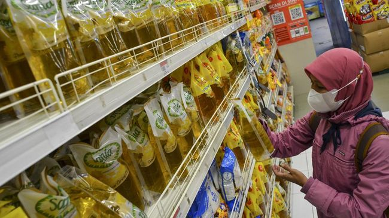

PKS Berkeras Bakal Ajukan Hak Angket Minyak Goreng
Politik | 5 jam yang lalu

Fraksi Partai Keadilan Sejahtera (PKS) DPR RI kukuh bakal mengajukan hak angket terkait kasus masalah langka dan mahal minyak goreng yang masih terjadi hingga saat ini. Langkah tersebut menjadi salah satu keputusan Konsolidasi Pimpinan Fraksi PKS se-Indonesia.
nasional